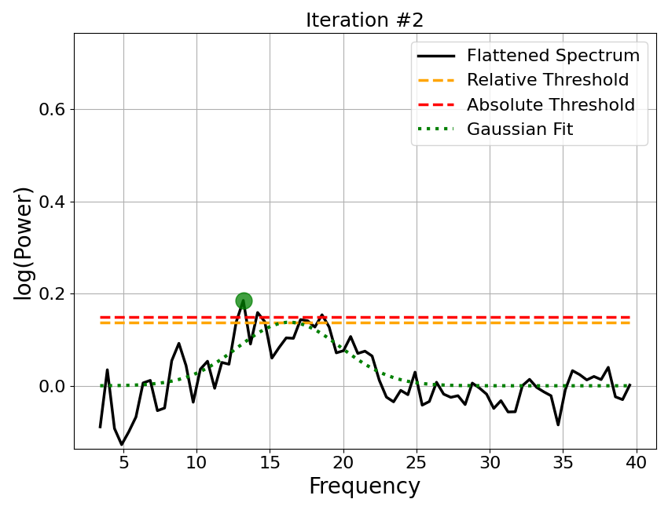
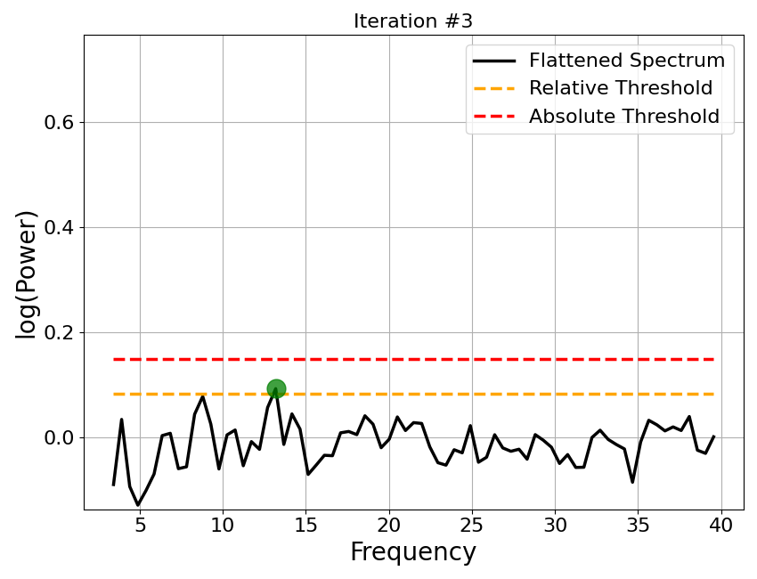

Note
Click here to download the full example code
03: Fitting Algorithm¶
A step by step overview of the algorithm for parameterizing neural power spectra.
Algorithmic Description¶
In this tutorial we will step through how the power spectrum model is fit.
Note that this notebook is for demonstrative purposes, and does not represent recommended usage of how to fit power spectrum models.
Broadly, the steps in the algorithm are:
An initial fit of the aperiodic component is taken of the power spectrum
This aperiodic fit is subtracted from the power spectrum, creating a flattened spectrum
An iterative process identifies peaks in this flattened spectrum
A full peak fit is created of all peak candidates found
The peak fit is subtracted from the original power spectrum, creating a peak-removed power spectrum
A final fit of the aperiodic component is taken of the peak-removed power spectrum
The full model is reconstructed from the combination of the aperiodic and peak fits, and goodness of fit metrics are calculated.
# General imports
import matplotlib.pyplot as plt
# Import the FOOOF object
from fooof import FOOOF
# Import some internal functions
# These are used here to demonstrate the algorithm.
# You do not need to import these functions for standard use of the algorithm
from fooof.sim.gen import gen_aperiodic
from fooof.plts.spectra import plot_spectrum
from fooof.plts.annotate import plot_annotated_peak_search
# Import utility to download and load example data
from fooof.utils.download import load_fooof_data
# Set whether to plot in log-log space
plt_log = False
# Load example data files needed for this example
freqs = load_fooof_data('freqs_2.npy', folder='data')
spectrum = load_fooof_data('spectrum_2.npy', folder='data')
Note that data can be added to a FOOOF object independent of fitting the model, using the
add_data() method. FOOOF objects can also be used to plot input data,
without having fit any models.
# Add data to the object
fm.add_data(freqs, spectrum, [3, 40])
# Plot the power spectrum
fm.plot(plt_log)

The FOOOF object stores most of the intermediate steps internally.
For this notebook, we will first fit the full model, as normal, but then step through, and visualize each step the algorithm took to come to that final fit.
# Fit the power spectrum model
fm.fit(freqs, spectrum, [3, 40])
Step 1: Initial Aperiodic Fit¶
We start by taking an initial aperiodic fit. The goal of this fit is to be able to use this fit to remove our estimate of the aperiodic component from the data.
# Do an initial aperiodic fit - a robust fit, that excludes outliers
# This recreates an initial fit that isn't ultimately stored in the FOOOF object
init_ap_fit = gen_aperiodic(fm.freqs, fm._robust_ap_fit(fm.freqs, fm.power_spectrum))
# Plot the initial aperiodic fit
_, ax = plt.subplots(figsize=(12, 10))
plot_spectrum(fm.freqs, fm.power_spectrum, plt_log,
label='Original Power Spectrum', color='black', ax=ax)
plot_spectrum(fm.freqs, init_ap_fit, plt_log, label='Initial Aperiodic Fit',
color='blue', alpha=0.5, linestyle='dashed', ax=ax)
Step 2: Flatten the Spectrum¶
The initial fit is then used to create a flattened spectrum. The initial aperiodic fit is subtracted out from the original data, leaving a flattened version of the data which no longer contains the aperiodic component.
# Recompute the flattened spectrum using the initial aperiodic fit
init_flat_spec = fm.power_spectrum - init_ap_fit
# Plot the flattened the power spectrum
plot_spectrum(fm.freqs, init_flat_spec, plt_log,
label='Flattened Spectrum', color='black')

Step 3: Detect Peaks¶
The flattened spectrum is then used to detect peaks. We can better isolate peaks in the data, as the aperiodic activity has been removed.
The fitting algorithm uses an iterative procedure to find peaks in the flattened spectrum.
For each iteration:
The maximum point of the flattened spectrum is found.
If this point fails to pass the relative or absolute height threshold, the procedure halts.
A Gaussian is fit around this maximum point
This ‘guess’ Gaussian is then subtracted from the flatted spectrum
The procedure continues to a new iteration with the new version of the flattened spectrum, unless max_n_peaks has been reached
# Plot the iterative approach to finding peaks from the flattened spectrum
plot_annotated_peak_search(fm)
- 
- 
Step 4: Create Full Peak Fit¶
Once the iterative procedure has halted and the peaks have been identified in the flattened spectrum, the set of identified ‘guess’ peaks, are then re-fit, all together. This creates the full peak fit of the data.
# Plot the peak fit: created by re-fitting all of the candidate peaks together
plot_spectrum(fm.freqs, fm._peak_fit, plt_log, color='green', label='Final Periodic Fit')
Step 5: Create a Peak-Removed Spectrum¶
Now that the peak component of the fit is completed and available, this fit is then used in order to try and isolate a better aperiodic fit.
To do so, the peak fit is removed from the original power spectrum, leaving an ‘aperiodic-only’ spectrum for re-fitting.
# Plot the peak removed power spectrum, created by removing peak fit from original spectrum
plot_spectrum(fm.freqs, fm._spectrum_peak_rm, plt_log,
label='Peak Removed Spectrum', color='black')
Step 6: Re-fit the Aperiodic Component¶
The initial aperiodic component fit we made was a robust fit approach that was used to get the fitting process started.
With the peak-removed spectrum, we can now re-fit the aperiodic component, to re-estimate a better fit, without the peaks getting in the way.
# Plot the final aperiodic fit, calculated on the peak removed power spectrum
_, ax = plt.subplots(figsize=(12, 10))
plot_spectrum(fm.freqs, fm._spectrum_peak_rm, plt_log,
label='Peak Removed Spectrum', color='black', ax=ax)
plot_spectrum(fm.freqs, fm._ap_fit, plt_log, label='Final Aperiodic Fit',
color='blue', alpha=0.5, linestyle='dashed', ax=ax)

Step 7: Combine the Full Model Fit¶
Now that we have the final aperiodic fit, we can combine the aperiodic components to create the full model fit.
With this full model fit, we can also calculate the goodness of fit metrics, including the error of the fit and the R-squared of the fit, by comparing the full model fit to the original data.
# Plot full model, created by combining the peak and aperiodic fits
plot_spectrum(fm.freqs, fm.fooofed_spectrum_, plt_log,
label='Full Model', color='red')
# The last stage is to calculate the goodness of fit metrics (fit error & R^2)
# and organize parameters, such as updating gaussian parameters -> peak parameters
# These results are part of what are stored, and printed, as the model results
fm.print_results()
Out:
==================================================================================================
FOOOF - POWER SPECTRUM MODEL
The model was run on the frequency range 3 - 40 Hz
Frequency Resolution is 0.49 Hz
Aperiodic Parameters (offset, exponent):
-21.3713, 1.1239
2 peaks were found:
CF: 10.00, PW: 0.685, BW: 3.18
CF: 16.32, PW: 0.138, BW: 7.03
Goodness of fit metrics:
R^2 of model fit is 0.9909
Error of the fit is 0.0332
==================================================================================================
# Plot the full model fit of the power spectrum
# The final fit (red), and aperiodic fit (blue), are the same as we plotted above
fm.plot(plt_log)
Addendum: Data & Model Component Attributes¶
As you may have noticed through this tutorial, the FOOOF object keeps
track of some versions of the original data as well as individual model components fits,
as well as the final model fit, the ultimate outcome of the fitting procedure.
These attributes in the FOOOF object are kept at the end of the fitting procedure. Though they are primarily computed for internal use (hence being considered ‘private’ attributes, with the leading underscore), they are accessible and potentially useful for some analyses, and so are briefly described here.
Stored model components:
Aperiodic Component:
_ap_fitThis is the aperiodic-only fit of the data.
It is computed by generating a reconstruction of the measured aperiodic parameters
Periodic Component:
_peak_fitThis is the periodic-only (or peak) fit of the data.
It is computed by generating a reconstruction of the measured periodic (peak) parameters
Stored data attributes:
Flattened Spectrum:
_spectrum_flatThe original data, with the aperiodic component removed
This is computed as
power_spectrum-_ap_fit
Peak Removed Spectrum:
_spectrum_peak_rmThe original data, with the periodic component (peaks) removed
This is computed as
power_spectrum-_peak_fit
Conclusion¶
In this tutorial we have stepped through the parameterization algorithm fitting power spectrum models. Next, we will continue to explore the FOOOF object, properly introducing the settings and further exploring the parameters.
Total running time of the script: ( 0 minutes 1.050 seconds)